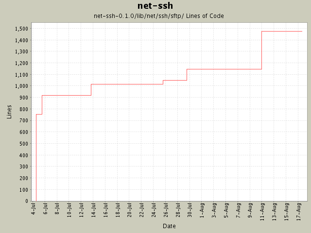

Summary Period: 2004-07-04 to 2004-08-17
[root]/net-ssh-0.1.0/lib/net/ssh/sftp

Total Lines Of Code:
1475 (2005-01-07 15:12)
| Author | Changes | Lines of Code | Lines per Change |
|---|---|---|---|
| minam | 22 (100.0%) | 1547 (100.0%) | 70.3 |
SFTP::Simple constructor now returns self if a block is not given.
2 lines of code changed in:
typo: rb_raise instead of raise
1 lines of code changed in:
Added more SFTP protocol coverage, including support for opening and manipulating
files. Basic buffered file IO is supported as well.
351 lines of code changed in:
Changed buffer implementation and refactored it to a new module. Added
support for tunneling via HTTP proxy.
18 lines of code changed in:
Gabriele Renzi's suggestion of an open-uri interface for SFTP. This
required some new methods be added to the SFTP interfaces (attributes,
and size). Also modified the SFTP 'get' interfaces to support the specification
of a 'chunk size' and a progress callback.
106 lines of code changed in:
SSH exception definitions.
31 lines of code changed in:
First pass at creating SSH-specific exception classes, as recommended by
Daniel Hobe.
12 lines of code changed in:
Added "remove" and "rename" operations to the SFTP classes.
99 lines of code changed in:
Added comments. Changed SFTP::Simple so that the synchronous operations only
return the data that was requested, and the status is made a property of
the Simple object itself.
176 lines of code changed in:
Added rudimentary SFTP support. Still undocumented.
751 lines of code changed in:
Generated by StatCVS 0.2.3